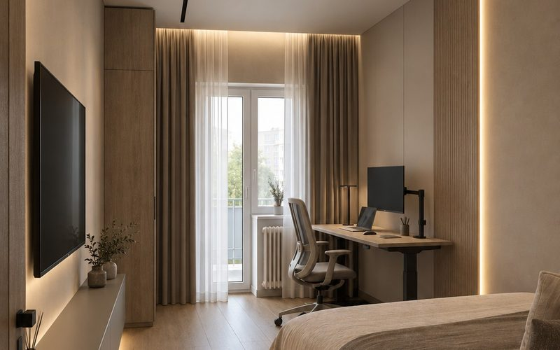

Desene pentru constructor
Pereții fiecărei camere, cu straturi: gips-carton, mobilă, prize și LED-uri. LivingCei 4 pereți și planul tavanului.Revizia 7 · 03.11.2026
LivingCei 4 pereți și planul tavanului.Revizia 7 · 03.11.2026
 HolCei 5 pereți și planul tavanului.Revizia 6 · 02.11.2026
HolCei 5 pereți și planul tavanului.Revizia 6 · 02.11.2026
 BucătărieCei 5 pereți și planul tavanului, după designul din 10/2026.Revizia 5 · 02.11.2026
BucătărieCei 5 pereți și planul tavanului, după designul din 10/2026.Revizia 5 · 02.11.2026
 BaieCei 4 pereți, cu faianța și instalațiile, și planul tavanului.Revizia 3 · 02.11.2026
BaieCei 4 pereți, cu faianța și instalațiile, și planul tavanului.Revizia 3 · 02.11.2026
 Grup sanitarCei 4 pereți, cu faianța și instalațiile, și planul tavanului.Revizia 3 · 02.11.2026
Grup sanitarCei 4 pereți, cu faianța și instalațiile, și planul tavanului.Revizia 3 · 02.11.2026

Dormitorul micCei 4 pereți și planul tavanului, după releveu și randări. Fără proiect de la arhitectă: totul e propunere.Revizia 6 · 03.11.2026